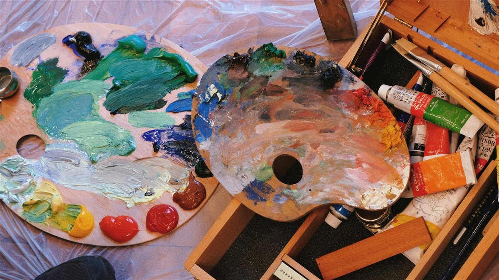
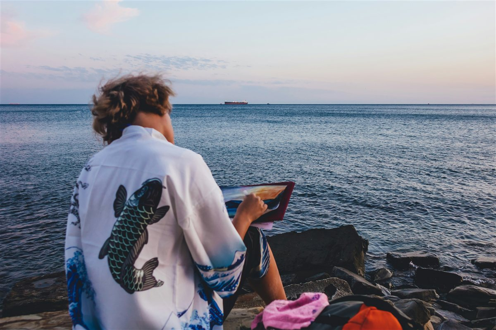
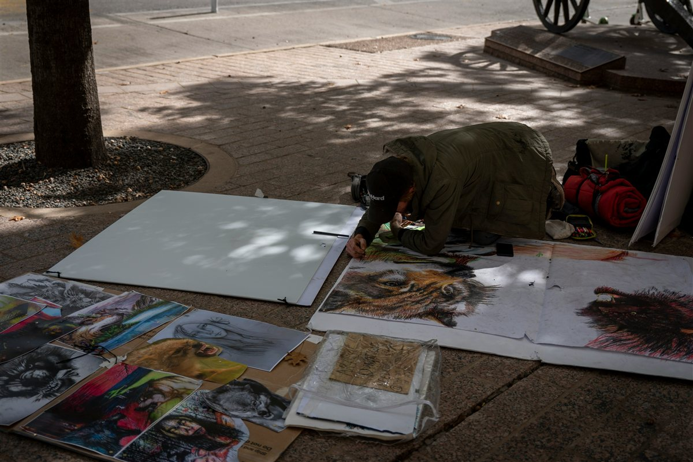
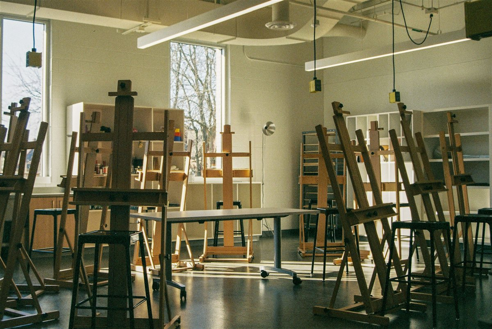
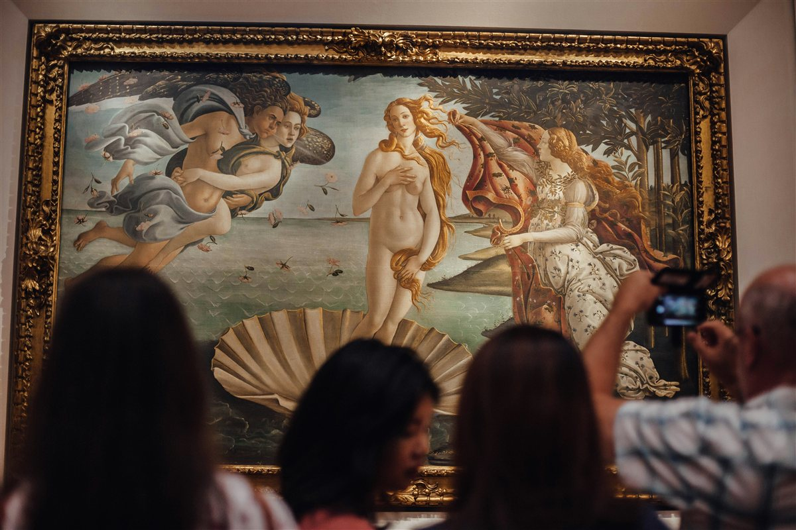

What is Oil Painting?

Oil painting is one of those art forms that's hard not to fall in love with once you really get into it. At its core, it's a technique where pigments are mixed with a drying oil, often linseed oil, to create paint that you then apply to a surface, usually canvas, wood, or linen.
Unlike acrylics or watercolors, oil painting can take days to dry (unless you mix your paint in a fast-drying solvent). This means you can blend colors directly on the canvas, go back, and make changes if you wanted to. It is also one of the oldest mediums to exist, dating back to 650 AD.
Properties of Oil Paint
| Property | Detail |
|---|---|
| Drying time | Days to weeks (touch-dry); months to fully cure |
| Binder | Linseed, walnut, or poppy oil |
| Surfaces | Canvas, wood panel, or paper (must be primed) |
| Finish | Matte to high gloss depending on medium used |
Who's Painting?

Oil painting belongs to everyone. Hobbyists, students, or professionals, anyone could find enjoyment in the craft. Art is pretty cool in that there really isn't any barrier to entry. Everyone makes bad art, at least at first, so theoretically anyone could approach it. Here's a little about who I am and why it stuck with me.
I picked up oil painting 10 years ago when I was 16. I always thought I was going to be an artist. I look back on my journey with art fondly, if not with a bit of sadness. I never really believed in myself as much as a successful artist should. Because of that, I didn't pursue it as strongly as I probably would have. When I entered college, I originally picked art as my major, but I managed to convince myself (with the help of others) that art will never make me a living. So, I switched majors. Very recently I started approaching it again and I remember why I loved it so much. I mostly paint landscapes.
My favorite Painters
- Robert Hills — A founding member of the Society of Painters in Water Colours
- Eugène Carrière — A French Symbolist painter known for his monochromatic, smokey style, often in muted browns and grays. He was also a close friend to Auguste Rodin
- George Butler — A British watercolor painter known for his depictions of the English countryside and capturing everday working people
- Albert Bierstadt — A German-American landscape painter that mostly depicts the American West, particularly the Rocky Mountains and Yosemite Valley
"I dream of painting and then I paint my dream." — Vincent van Gogh
When's a good time to paint?
The best time to paint is whenever you can actually make the time. That'll look different for everyone. That said, a lot of painters find that the morning light is softer and more consistent. Some people swear by evening painting sessions. Usually they'll use their own lighting to illuminate their work
Ideal Conditions by Time of Day
| Time of Day | Light Quality | Best For |
|---|---|---|
| Early morning (7–10 AM) | Soft, warm, diffused | Landscapes and still life with delicate tones |
| Midday (11 AM–2 PM) | Bright, harsh, high contrast | Bold color studies; plein air on overcast days |
| Afternoon (3–6 PM) | Warm golden light | Portraits and warm-toned landscapes |
| Evening (studio) | Artificial, consistent | Detail work and final finishing layers |
Where are we painting?

Oil painting can happen almost anywhere. The subject of the work is what often dictates where it takes place, but there are several other factors that matter when determining an ideal spot for painting
Indoor Studio
A home studio gives full control over lighting, temperature, and layout. North-facing windows are traditionally preferred for their consistent, cool, indirect light that won't shift throughout the day. A dedicated space also eliminates setup and teardown time, making daily painting a much lower-friction habit.
Plein Air (Outdoors)
Plein air painting, or working directly from nature, has a deep tradition in oil painting, championed by the 19th-century Impressionists. Working outdoors demands speed and decisiveness, which sharpens observation skills and loosens brushwork in ways studio practice alone cannot.
Some of my favorite spots
- Lake Norman State Park — Reflective water, dense tree lines, open skies
- Crowders Mountain — Dramatic rock faces and wide panoramic views
- Freedom Park — Urban green space with varied seasonal subjects
- The Mint Museum — Inspiration from collections; active local art community
- NoDa Arts District — Street murals and textured walls make for interesting subject material
How does one paint?

Getting started with oil painting requires a small but specific set of materials and a basic understanding of a few foundational techniques. The learning curve is real, but even early attempts produce satisfying results, and the process itself is the reward.
Essential Materials
| Category | Item | Notes |
|---|---|---|
| Surface | Stretched canvas or wood panel | Must be primed with gesso first |
| Paint | Artist-grade oil paints | Start with 6–8 colors; student grade works fine initially |
| Brushes | Hog bristle and soft synthetic | Flats, rounds, and filberts in varied sizes |
| Medium | Linseed oil or odorless mineral spirits | Thins paint and adjusts working time |
| Palette | Glass, wood, or disposable pad | Glass is the easiest to clean thoroughly |
| Solvent | Odorless mineral spirits (OMS) | For brush cleaning; always use in a ventilated space |
The Basic Painting Process
- Tone the canvas — Apply a thin wash of color to eliminate the stark white ground
- Sketch the composition — Loose charcoal or a thin diluted paint sketch
- Block in shadows — Establish the darkest values first
- Build up midtones — Work from dark to light, layer by layer
- Add highlights and detail — Thicker paint applied last (fat over lean rule)
- Varnish when cured — Apply a protective varnish after 6–12 months of drying
Why bother making art?

There are many practical reasons to pick up oil painting, and just as many deeply personal ones. However, I think it's important to recognize the question, why should art even exist? The question sounds provacative but is really just confused. It assumes art is a luxary bolted into our lives, something we could remove and still have the same life, only leaner. But art is not an addition to human experience. It is one of its oldest and most persistent expressions. To ask why it should exist is a little like asking why language should exist. Critics of art often frame their skepticism in economic terms: it doesn't feed anyone, it doesn't cure disease. But this misunderstands what people are fed by. Meaning isn't a luxury. A life stripped of beauty and narrative is an impoverished life.
That said, anyone who enjoys art and finds the process of making it enjoyable should do so without reservations or fear of what others think.
"Every artist dips his brush in his own soul, and paints his own nature into his pictures." — Henry Ward Beecher
AI Prompts
AI Model: Claude Sonnet 4.6 (claude-sonnet-4-6) by Anthropic
- "Today we will be making a website for an assignment based on a hobby/interest of mine..." — Created the
itis3135/hobby/folder andimages/subfolder, then builtindex.htmlas a single self-contained file with an embedded stylesheet, header, main, and footer — no includes. - (Same prompt) — Built six section-based pages (What, Who, When, Where, How, Why) with JavaScript to show one section at a time, using
◆as the nav divider. - "I would like all of the images to be the same size" — Standardized all image display sizes to 600px via CSS, removing individual inline
widthattributes from eachimgtag. - "Can you please place this piece of code where it's appropriate? <script src='scripts/HTMLInclude.min.js'></script>" — Added the script with the corrected relative path
../scripts/HTMLInclude.min.jsfor thehobby/subdirectory. - "I'm trying to get this file to work: HTMLInclude.min.js" — Explained that the script requires a local web server (Live Server, Python, or Node) to function, as
file://protocol blocks XMLHttpRequest. - (Lint.page image size errors) — Resized all six images from their original large dimensions (up to 5616×3744) down to 1200px wide using PowerShell's
System.Drawinglibrary. - "Warning: Heading (h1) should not be qualified" — Fixed the CSS by changing the qualified selector
header h1to justh1. - "Warning: Using width with padding can sometimes make elements larger than you expect" — Swapped
borderforoutlineonfigure imgand removedwidth: 100%frommain. - "Bad value 'itis3135\tblanddesigns.com\index.html' for attribute href" — Replaced backslashes with forward slashes in the footer link.
- "Can we verify that everything we have fits within the assignment requirements?" — Reviewed all criteria; found the validation buttons were missing from the footer.
- "I'm not sure what these validation buttons are" / "I have a validator in my code though. And we always use that one" — Confirmed the lint.page script already in the
<head>satisfies the requirement. - "Is there any redundant code?" — Removed the unused
.validation-buttonsCSS rules and the pointlessmargin-bottomonfooter nav. - "I would like to add a favicon" / "C:\Users\tybla\Downloads\favicon-32x32.png" — Copied the file into the hobby folder and added a
<link rel="icon">tag to the<head>. - "Can you make an empty section called AI Prompts" — Added the nav link and this section.
- "The line going underneath the H2 does not extend across the screen" — Tried several fixes; root cause was
margin: 0 autoin a flex context causingmainto shrink to content width. - "It would seem to be a margin error" — Resolved by moving
padding: 2remfrommainontosection, fixing both the layout bug and the remaining linter warning. - "Can you place in the paragraph section, a record of everything you and I did?" — Added this list.
- "Can you include the prompts I used?" — Updated each entry to include the prompt that triggered it.